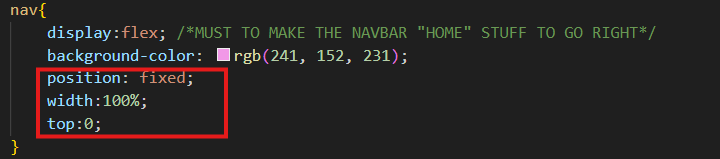
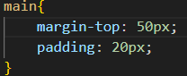
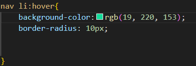

✔️How to make my Navbar
This is my Style.css. And to make the Home, Form, Table and Flex to the Right of the screen the red mark ones are important!!
And to make the Home items in a line (display:flex) is important!!

Also to make the navbar stay on top and is moving along with my scroll---
 ✔️How to Add Audio and Video
Below You can see how to add audio, video and iframe from youtube.

✔️How to Add hover
Below you can see the CSS file where the navbar hover is added---
